Заронтін-(Zarontin)
Заронтін або Суксилеп - виявляє протисудомну дію, що виявляється при малій формі епілептичних припадків. Також ефективний при нападах міоклонічного характеру. Дія Заронтіна обумовлюється процесом гноблення моторного центру в корі головного мозку, підвищенням судомних порогів. Препарат Заронтін не впливає на рівень концентрації кислот в ЦНС при застосуванні згідно з інструкцією в терапевтичних дозах.Знижує частоту ймовірності виникнення малих припадків, судомних епілептиформних станів, пригнічує пароксизмальну активність ЕЕГ, що є характерною при абсансах, що супроводжуються порушенням свідомості. Заронтін ефективний в станах міоклінічних нападів. У повному обсязі терапевтичний ефект проявляється в період до 8 тижнів.

Ціна: 1400 грн/уп.
Заронтін капсули - Zarontin capsule
Заронтін капсули - це ще одна форма відомого Заронтін сиропу, що також виявляє протисудомну дію, що виявляється при малій формі епілептичних припадків. Має такий самий ефект при нападах міоклонічного характеру. Дія Заронтіна обумовлюється процесом гноблення моторного центру в корі головного мозку, підвищенням судомних порогів. Доза Zarontin капсули залежить від клінічної картини захворювання, індивідуальної реакції пацієнта на лікування та переносимості. Лікування починають із невеликих доз. Дози поступово підвищують.

Ціна: 1800 грн/уп.
Депакін Хроно 500 - Depakine Chrono 500
Основним показанням до застосування препарату Депакін Хроно 500 мг, бажано як монотерапії, є первинна генералізована епілепсія: малі епілептичні напади/ абсансна епілепсія, масивні білатеральні міоклонічні судоми, великі напади епілепсії з міоклонією або без неї, фотосенситивні форми епілепсії.
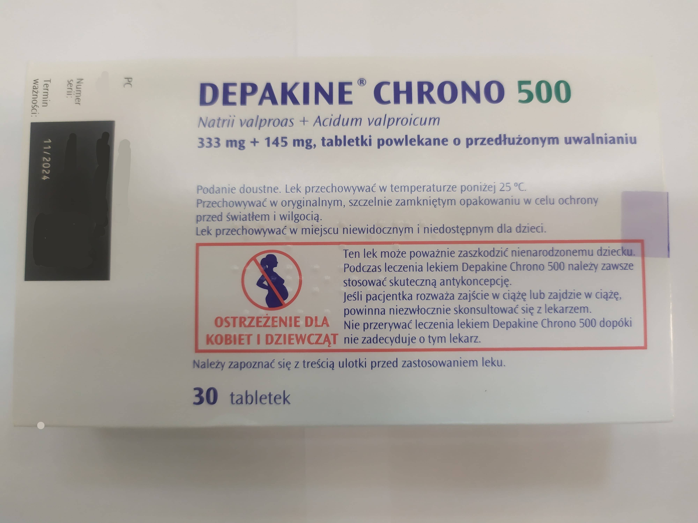
Ціна: 400 грн/уп.
Фрізіум,фрісіум капсули 10мг - Frisium - 10mg
Препарат Фрізіум – Викликає зменшення напруженості, подразнення, збудження, агресивності, сприяє нормалізації сну. Основна діюча речовина – клобазам – анксіолітик, ефективний у лікуванні невротичних розладів особи неуточненого генезу. Має протисудомні властивості. Також ефективно гальмує занепокоєння, дратівливість. Механізм дії обумовлений здатністю молекул клобазаму вступати у взаємодію з рецепторами бензодіазепіну. Може застосовуватися в тому числі при алкогольному синдромі та підготовці до хірургічних втручань, операцій.
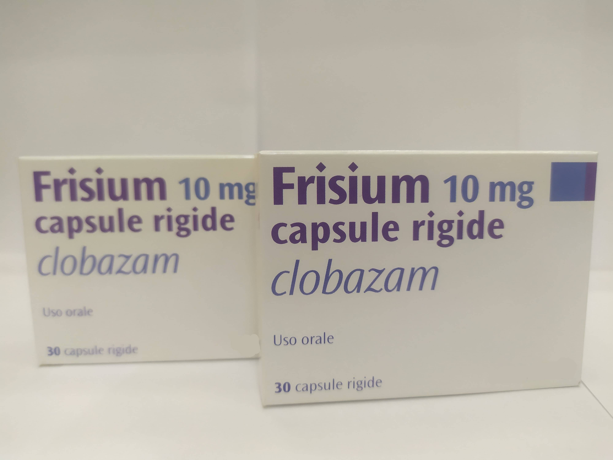
Ціна: 600 грн/уп.
Нуклеодол - Nucleodol
Нуклеодол - це харчова добавка, що діє на периферичну нервову систему, показана при різних формах периферичних невропатій. Забезпечує необхідні поживні елементи в ситуаціях, коли може бути вражена периферична нервова система, сприяючи захисту, відновленню та функціонуванню тканин, які впливають на нейропатію. В результаті дослідження специфічних потреб при захворюваннях периферичної нервової системи лабораторії Fisiopharma розробили Nucleodol, продукт з ексклюзивною формулою, оскільки на ринку немає іншої харчової добавки, яка містила б такі ж компоненти.
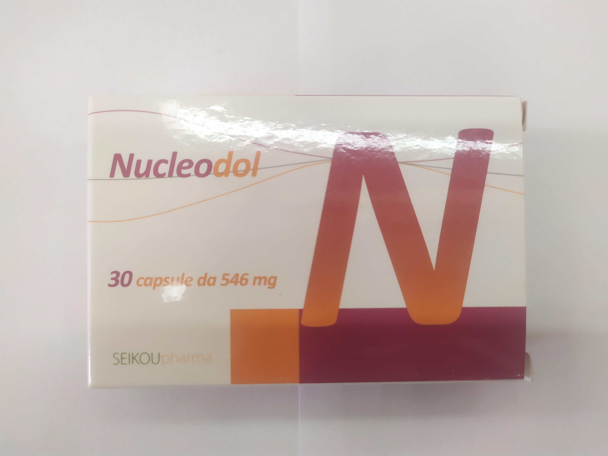
Ціна: 1200 грн/уп.
Cogiton флакони - Когітон флакони
Харчова добавка на основі гінкго білоба, вітамінів С-Е-В, селену, L-цистеїну, карнозину, коензиму Q10, β-каротину. Гінкго білоба сприяє пам'яті та функціональній поінформованості. Вітаміни групи В сприяють підтримці нормальної функції нервової системи. Може бути використаний у пацієнтів з діабетом та целіакією.Можливий продаж по флаконам - 1 флакон / 100грн.Зберігати у недоступному для дітей місці. Добавки не призначені як заміна різноманітного харчування. Не перевищувати дозування.
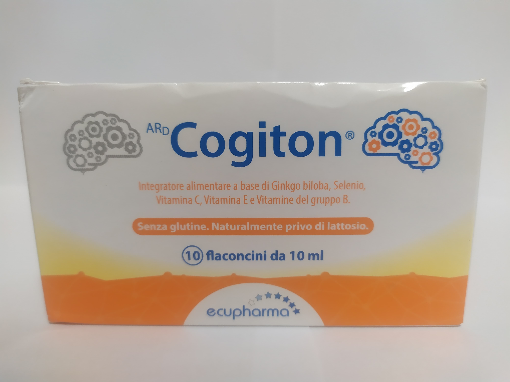
Ціна: 850 грн/уп.
Міотенс ампули - MiOtens ампули
Тіоколхікозид — міорелаксант, що гальмує скорочення, використовується при ревматичних процесах, травмах, для зняття гіпертонусу м'язів. Діє на ЦНС як антагоніст інгібіторного нейромедіатора ГАМК, взаємодіючи високоселективним чином з габамінергічними рецепторами. Показано також високу спорідненість до гліцинергічних рецепторів, чутливих до стрихніну. Висока активність габамінергічних і гліцинергічних рецепторів і його агоністична дія на них обґрунтовано пояснюють його гальмівну дію на ЦНС, що проявляється зниженням м'язового тонусу, тобто діє як міорелаксант.
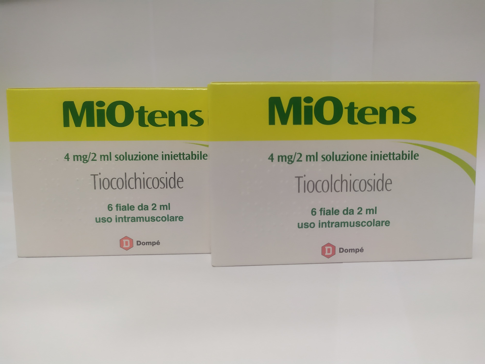
Ціна: 670 грн/уп.
НеураксБіотік Спектрум саше - NeuraxBiotic Spectrum sashe
Це харчова добавка, що містить певний, перевірений та науково оцінений пробіотичний штам Lactobacillus plantarum PS128. NeuraxBiotic Spectrum не має побічних ефектів, він не містить глютену, лактози та барвників. Neurax Biotic Spectrum - харчова добавка в саше, що містить Lactobacillus plantarum DR7 та магній. Штам бактерій, що міститься в NeuraxBiotic Spectrum, стійкий до шлункової кислоти, тому він може розмножуватися та діяти у кишечнику. Існує взаємний зв'язок між нашим мозком та кишковою флорою через вісь кишечник-мозок. Бактерії, які природно живуть у нашому кишечнику, виробляють безліч речовин, які надсилають інформацію в наш мозок. Таким чином, кишкові бактерії можуть впливати на наші емоції, самопочуття та стрес.
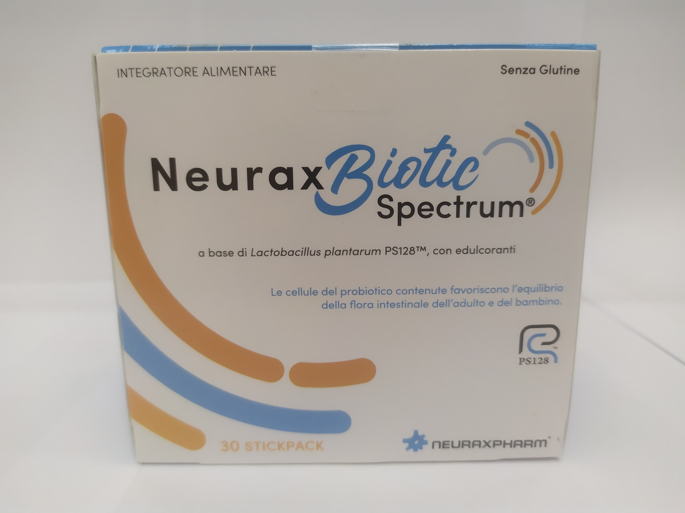
Ціна: 1650 грн/уп.
Ліпосом Форте - Liposom forte
Ліпосом Форте - препарат для лікування захворювань нервової системи; психостимулятор, ноотропний засіб. Вплинув на фізико-хімічні властивості мембран нейронів, гіпоталамічні фосфоліпіди змінюють адаптацію рецепторів центральних нейронів до лікування. Liposom Forte застосовується як допоміжний засіб при лікуванні метаболічних церебральних порушень внаслідок нейроендокринних розладів.
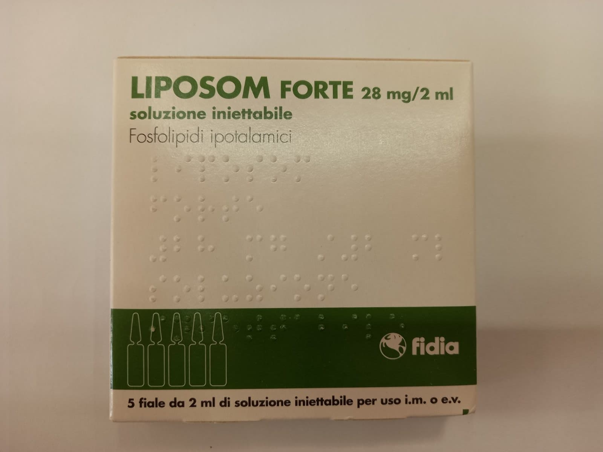
Ціна: 750 грн/уп.
Трікортін 1000 - Tricortin 1000
Препарат Трикортин належить до групи ноотропів та дозволяє впоратися з неврозами різної етіології. При цьому Трикортин не впливає на функціональність інших органів та систем та не шкодить їх роботі. До складу Трікотрін 1000 входять фосфоліпіди, ціанокобаламін (вітамін В12) та додаткові ефіри. Такий компонентний склад здатний поновити порушені функції головного мозку.
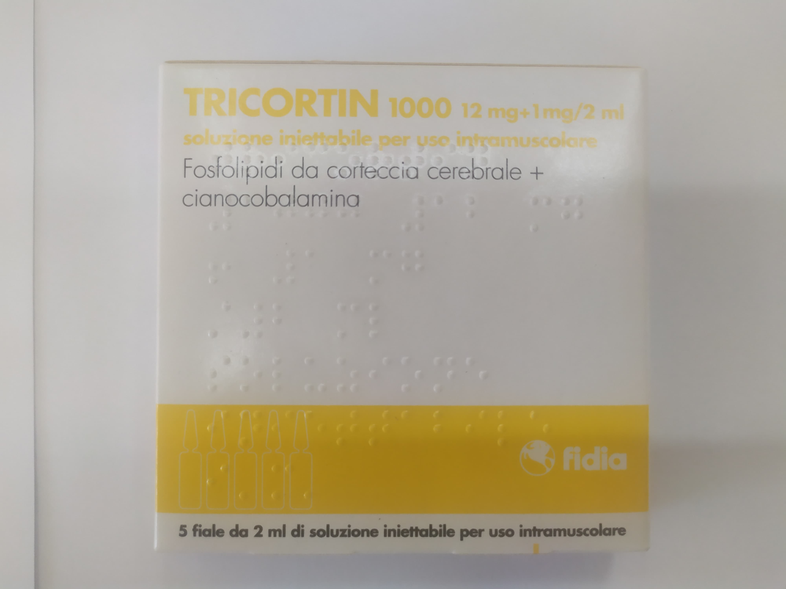
Ціна: 750 грн/уп.
Делеціт(Холіна альфосцерат) - Delecit(colina alfoscerato)
Делеціт 600мг/7мл - Холіноміметик. Є попередником ацетилхоліну. Чинить вплив переважно на холінергічні рецептори в ЦНС. Гліцерофосфат, який утворюється при розщепленні холіну альфосцерату, є попередником фосфоліпідів (фосфатидилхоліну) мембрани нейрона. Полегшує передачу нервових імпульсів у холінергічних нейронах, покращує пластичність нейрональних мембран та функцію рецепторів.
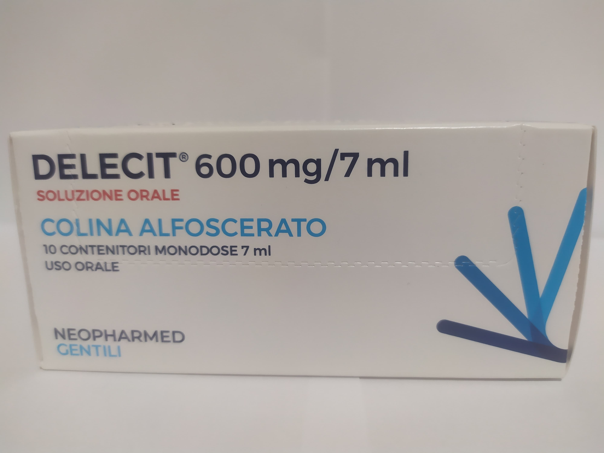
Ціна: 1250 грн/уп.
Гліатілін флакони 600mg/7ml - Gliatilin 600mg/7ml
Гліатілін 600мг/7мл - покращує передачу нервових імпульсів у холінергічних нейронах; позитивно впливає на пластичність нейрональних мембран та на функцію рецепторів. Покращує церебральний кровотік, посилює метаболічні процеси у головному мозку, активує структури ретикулярної формації головного мозку та відновлює свідомість при травматичному ураженні головного мозку. Має профілактичну та коригуючу дію на такі патогенетичні фактори інволюційного психоорганічного синдрому, як зміна фосфоліпідного складу мембран нейронів та зниження холінергічної активності.
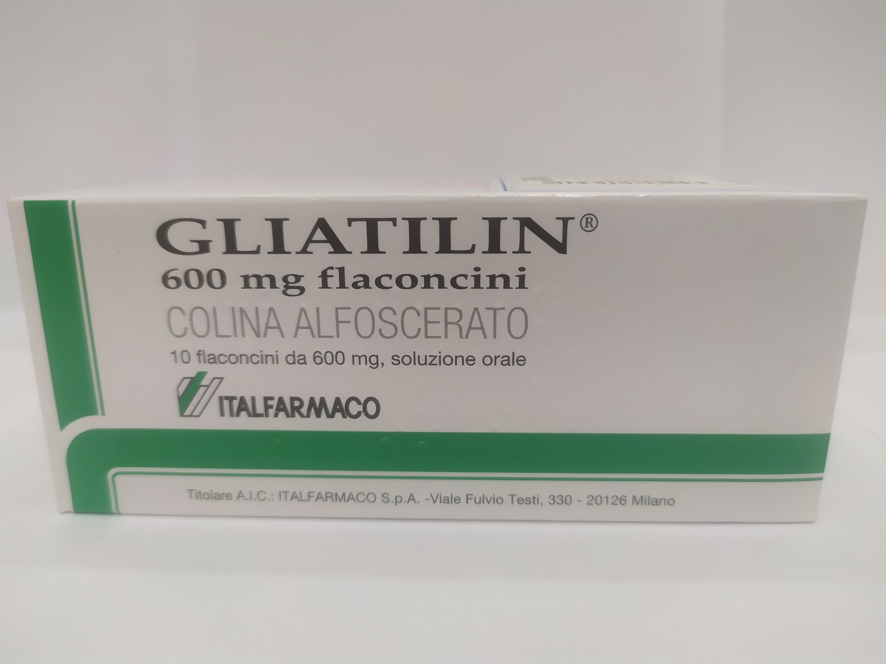
Ціна: 1300 грн/уп.
Гоназі(гонасі) Ампули - Gonasi HP 5000 U.I. /1ml Ампули
GONASI HP 5000 / 1ml – лікувальний засіб при урогенітальній патології, а також статевий гормон Необхідність використання Гоназу залежить від діагнозу. Проводити лікування препаратом Gonasi Hp слід згідно з інструкцією та рекомендаціями лікаря. Уважно вивчіть протипоказання перед застосуванням Гоназу. Не приймайте препарат, якщо у Вас є алергія на діючу речовину Гоназа (Гонадотропін Хоріонічний) або будь-який допоміжний компонент ліки.
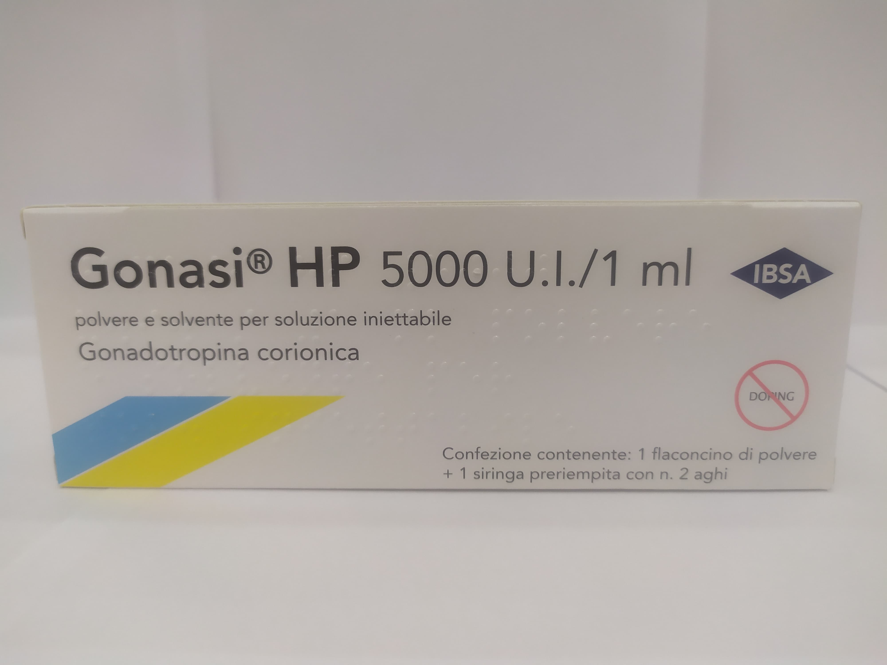
Ціна: 1350 грн/уп.
Лоразепам 2,5мг таблетки - Lorazepam 2,5mg таблетки
Анксіолітичний засіб (транквілізатор), похідний бензодіазепіну. Має анксіолітичну, седативну, снодійну, протисудомну, центральну міорелаксуючу, протиблювотну дію. Механізм анксіолітичної, седативної та снодійної дії пов'язують із посиленням гальмівного впливу GABA в ЦНС. Протисудомна дія, мабуть, частково зумовлена посиленням пресинаптичного гальмування; пригнічується поширення епілептогенної активності, що виникає в епілептогенних вогнищах у корі, таламусі та лімбічних структурах, але не знімається збуджений стан.
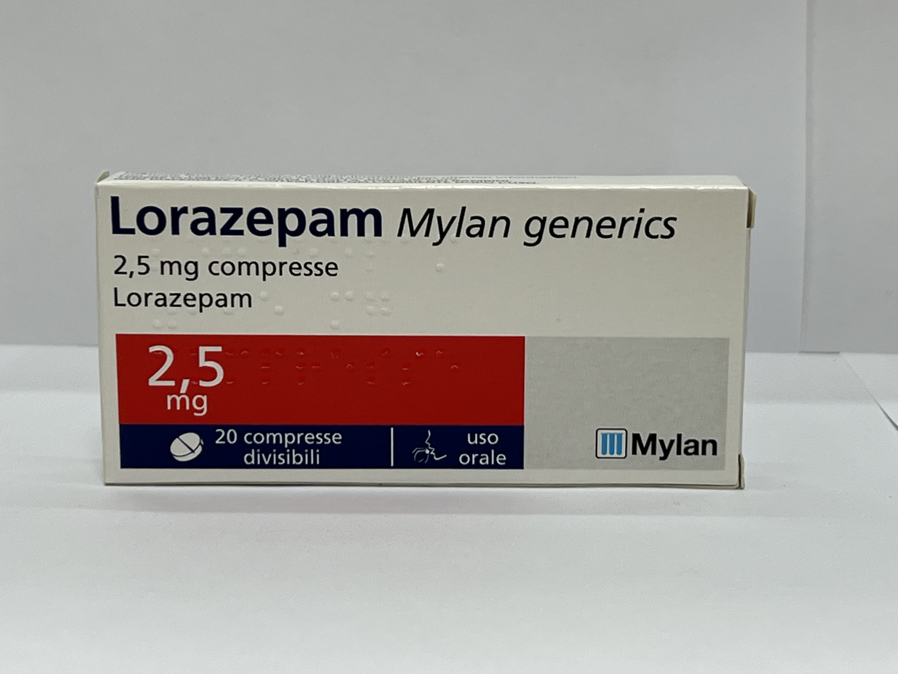
Ціна: 450 грн/уп.
Валіум(Діазепам) краплі - Valium(Diazepam) краплі
Валімум(Дазепам) - використовують при Тривожних розладах,безсонні (бензодіазепіни показані тільки при тяжких розладах, особливо для пацієнтів, які мають критичні патологічні стани). Усунення м'язових спазмів, асоційованих зі спазмами церебральної етіології. У складі комплексного лікування епілепсії.Премедикація при незначних хірургічних втручаннях. Діазепам є одним з основних бензодіазепінових транквілізаторів. Чинить анксіолітичну, центральну міорелаксуючу, протисудомну, седативну та помірну снодійну дію. Проявляє незначну вегетативну активність. Механізм дії діазепаму пов’язаний з ГАМК, що є гальмуючим медіатором у ЦНС. Відомо, що ГАМК-ергічні нейрони гальмують діяльність нейронів інших типів. Препарат знижує активність ферменту ГАМК-трансамінази, за рахунок цього підвищуючи вміст ГАМК у мозку.
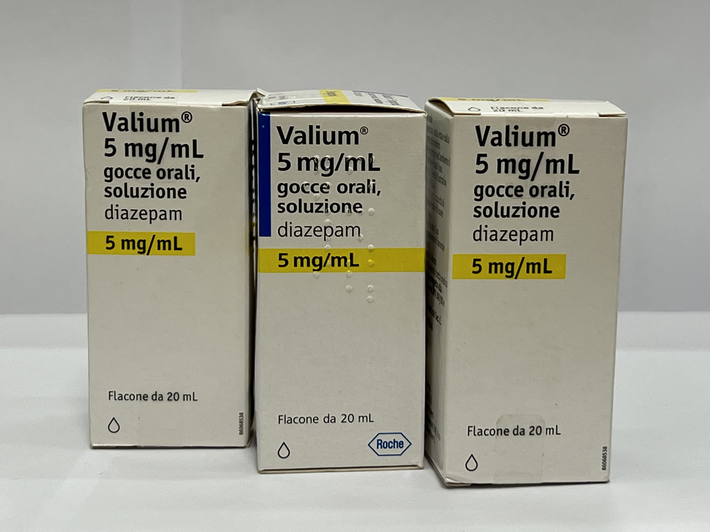
Ціна: 700 грн/уп.
Рівотріл(Клоназепам) таблетки - Rivotril(Clonazepam) таблетки
Протисудомний препарат бензодіазепінового ряду – Рівотріл, надає терапевтичний вплив завдяки основному компоненту клоназепіну. Медикамент посилює вплив гамма-аміномасляної кислоти, уповільнюючи передачу нервових імпульсів, знижує збудливість підкірки головного мозку та швидкість постсинаптичних спинальних рефлексів. Пресинаптичне гальмування допомагає запобігти поширенню епілептогенної активності, не впливаючи на збудження в осередку.
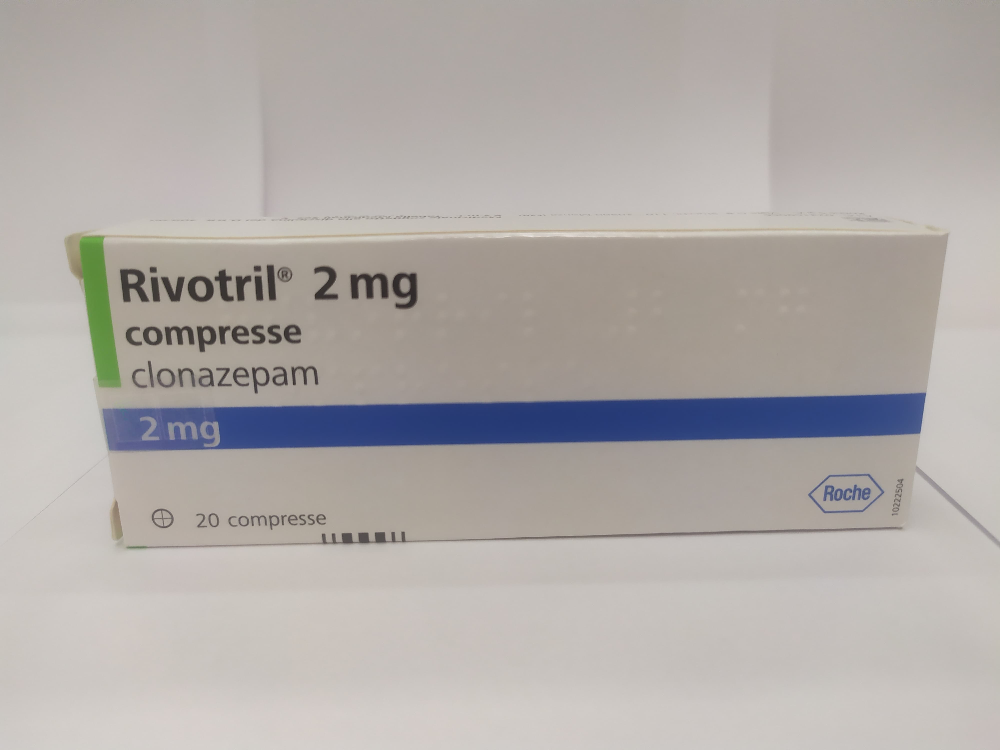
Ціна: 300 грн/уп.
Рівотріл(Клоназепам) краплі - Rivotril(Clonazepam) краплі
Протисудомний препарат бензодіазепінового ряду у формі крапель – Рівотріл краплі, надає терапевтичний вплив завдяки основному компоненту клоназепіну. Тепер у формі крапель. Рівотріл в краплях полегшує прийом ліків та доступність їх застосування. Медикамент посилює вплив гамма-аміномасляної кислоти, уповільнюючи передачу нервових імпульсів, знижує збудливість підкірки головного мозку та швидкість постсинаптичних спинальних рефлексів. Пресинаптичне гальмування допомагає запобігти поширенню епілептогенної активності, не впливаючи на збудження в осередку.
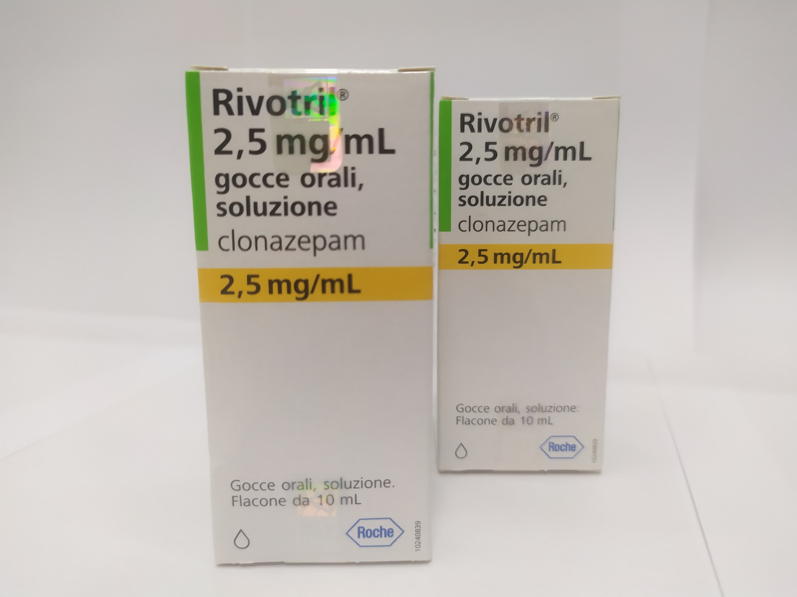
Ціна: 280 грн/уп.
Ксанакс(Алпразолам) 2мг таблетки - Xanax(Alprazolam) 2mg
Ксанакс (Алпразолам) – це одна з форм бензодіазепінів, які надають допомогу при тривожності і безсонні. Препарат уповільнює роботу нервової системи, допомагає зняти тривогу, відчуття загрози. Людина заспокоюється, його життєвий ритм налагоджується. Але тільки при дотриманні всіх правил і рекомендацій прийому ліків. Крім боротьби з тривожністю Xanax допомагає впоратися з алкогольною залежністю. При відмові від спиртного у людини виникають відчуття тривоги, панічні атаки і інші проблеми, вирішенням яких стає призначений лікарем препарат.
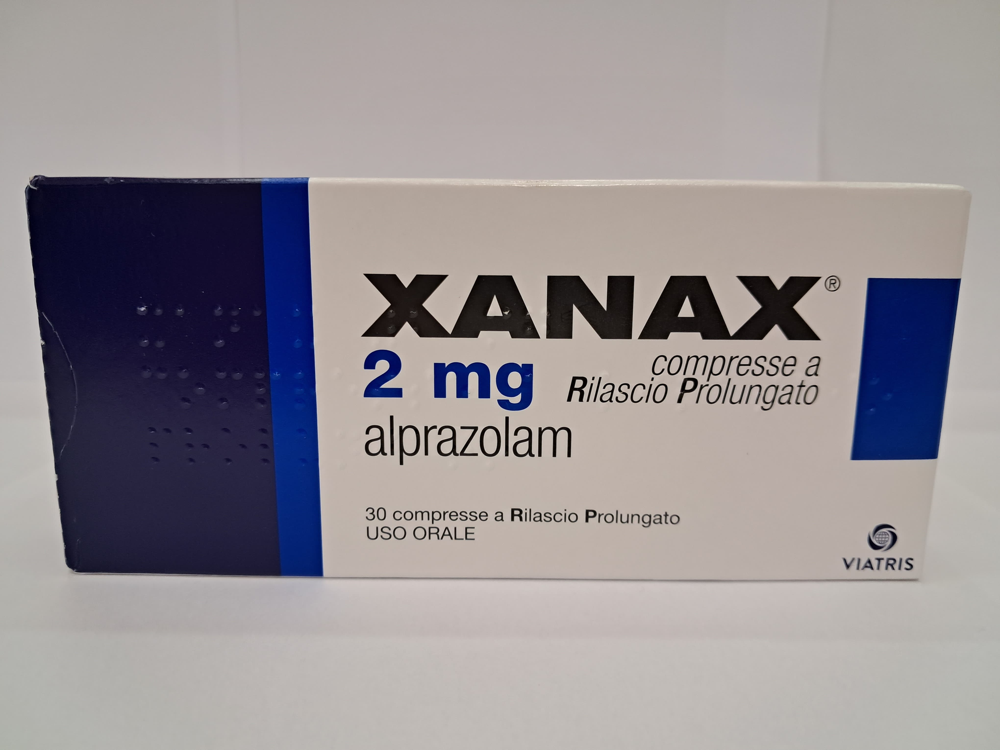
Ціна: 1600 грн/уп.
Могадон(Нітразепам) таблетки - Mogadon(Nitrazepam) таблетки
Могадон діюча речовина якого - нітразепам є снодійним засобом бензодіазепінової природи. Виявляє виражений снодійний, анксіолітичний, седативний, протисудомний та міорелаксантний фармакологічні ефекти. Механізм дії препарату полягає в активізації бензодіазепінових рецепторів ГАМК-бензодіазепін-хлоріонофорного комплексу, який підвищує чутливість ГАМК-рецепторів до медіатора (ГАМК) і стимулює внутрішньоклітинну проникність цитоплазматичної мембрани для іонів хлору, за рахунок чого забезпечує пригнічення. Нітразепам пригнічує здатність нейронів головного мозку до збудження, а також умовні та полісинаптичні спинномозкові рефлекси.
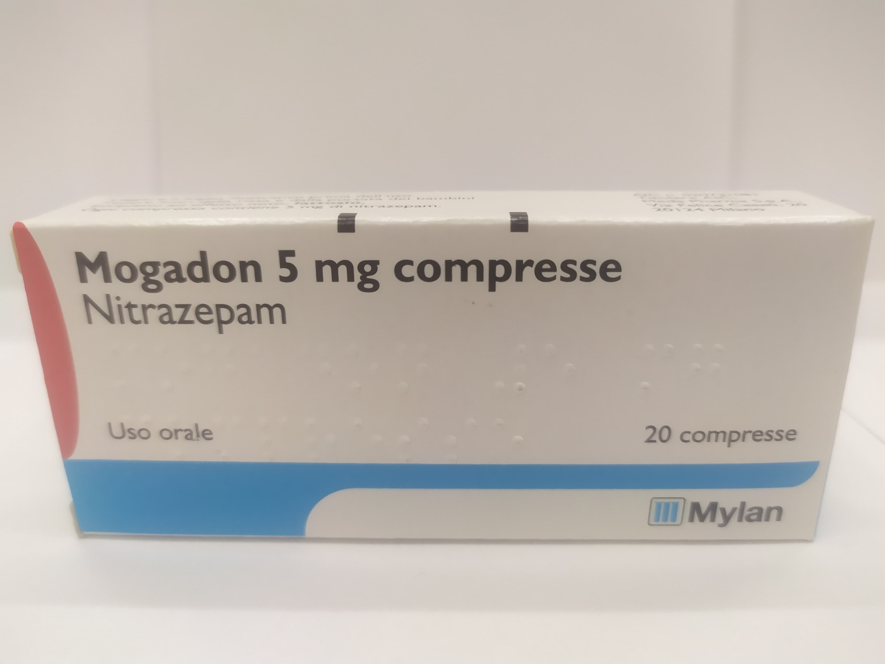
Ціна: 650 грн/уп.
Тріттіко 75мг таблетки - Trittico 75mg таблетки
Тріттіко діюча речовина якого Тразодон – тріазолпіридинова похідна. Він є ефективним для лікування депресивних станів, у тому числі депресії, пов’язаної з тривожністю та порушенням сну та відрізняється швидким початком дії (близько 1 тижня). Тразодон є інгібітором зворотного захоплення серотоніну та антагоністом 5-HT2 рецепторів, активізація яких зазвичай пов’язана з появою безсоння, тривожності, психомоторного збудження та змін статевої функції.
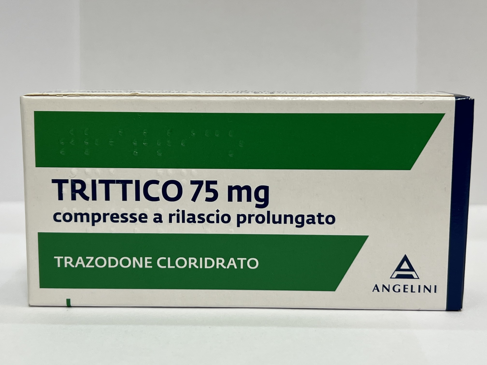
Ціна: 450 грн/уп.
Ніцетіл,Ницетил-(Nicetile) таблетки
L-ацетилкарнітин є природним ізомером речовини, що у фізіологічних умовах присутнього в організмі в різних органах та тканинах, у тому числі в ЦНС, бере участь у метаболізмі жирних кислот та вуглеводів. При патології має нейропротективну дію, особливо по відношенню до нейронів та їх органел (мітохондрій), а також як трофічний фактор сприяє відновленню структури клітин.

Ціна: 1350 грн/уп.
Ніцетіл,Ницетил-(Nicetile) Cаше
L-ацетилкарнітин є природним ізомером речовини, що у фізіологічних умовах присутнього в організмі в різних органах та тканинах, у тому числі в ЦНС, бере участь у метаболізмі жирних кислот та вуглеводів. При патології має нейропротективну дію, особливо по відношенню до нейронів та їх органел (мітохондрій), а також як трофічний фактор сприяє відновленню структури клітин.

Ціна: 1130 грн/уп.
Ніцетіл,Ницетил-(Nicetile) Ампули
L-ацетилкарнітин є природним ізомером речовини, що у фізіологічних умовах присутнього в організмі в різних органах та тканинах, у тому числі в ЦНС, бере участь у метаболізмі жирних кислот та вуглеводів. При патології має нейропротективну дію, особливо по відношенню до нейронів та їх органел (мітохондрій), а також як трофічний фактор сприяє відновленню структури клітин.
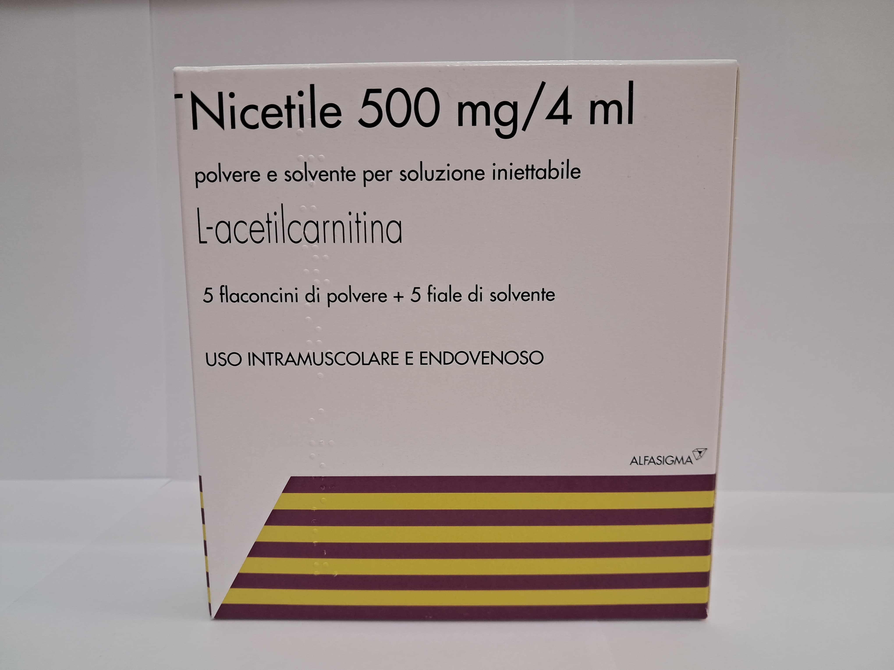
Ціна: 1500 грн/уп.
Сабріл саше - Sabril саше
Сабріл саше - протиепілептичний засіб. Необоротний селективний інгібітор GABA амінотрансферази. Підвищує концентрацію GABA у синапсах, збільшуючи тим самим гальмівні ефекти. Пригнічує підвищену збудливість нейронів, що лежить в основі виникнення та розповсюдження епілептичних судом. У період лікування необхідний ретельний медичний контроль виявлення побічних неврологічних порушень. Різке припинення лікування може призвести до відновлення судом.
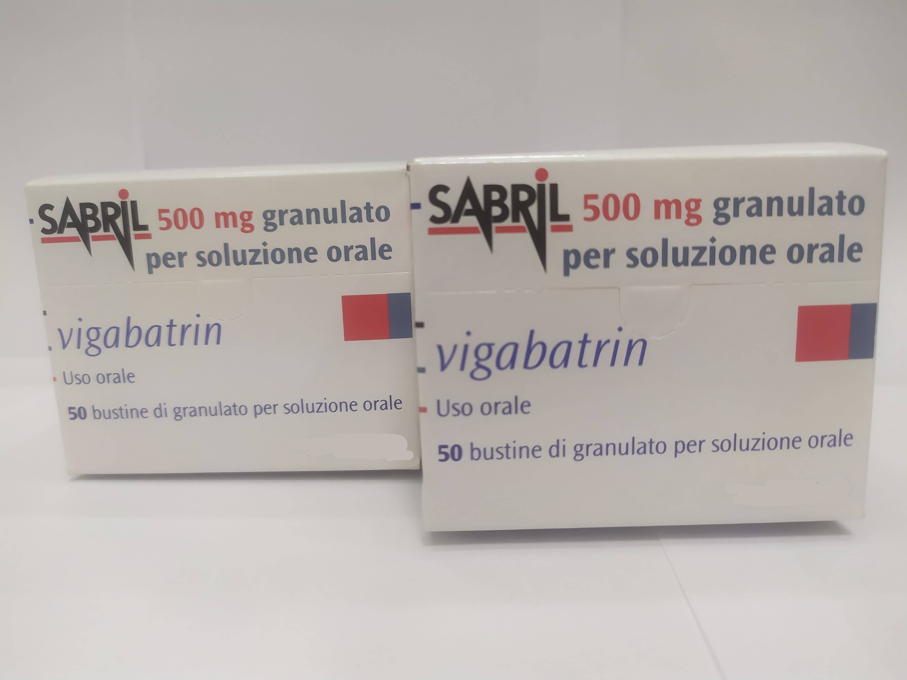
Ціна: 1550 грн/уп.
Плавікс №84(Клопідрогель)-Plavix №84(klopidogrel)
Клопідогрель селективно пригнічує зв’язування аденозиндифосфату (АДФ) з рецептором на поверхні тромбоциту та наступну активацію комплексу GPIIb/IIIa під дією АДФ, і, таким чином, пригнічує агрегацію тромбоцитів. Для утворення активного інгібітору агрегації тромбоцитів необхіднабіо трансформація клопідогрелю. Клопідогрель також пригнічує агрегацію тромбоцитів, індуковану іншими агоністами, шляхом блокування підвищення активності тромбоцитів вивільненим АДФ. Клопідогрель не зворотно зв’язується зАДФ-рецепторами тромбоцитів. Отже, тромбоцити, що увійшли у взаємодію зклопідогрелем, ушкоджуються до кінця їх життєвого циклу, і нормальна функція тромбоцитів відновлюється зі швидкістю, що відповідає швидкості оновлення тромбоцитів.

Ціна: 1100 грн/уп.
Крестор 20мг-(Crestor 20mg)
Первинна гіперхолестеринемія (тип ІІа, включаючи сімейну гетерозиготну гіперхолестеринемію) або змішанагіперхолестеринемія (тип ІІв) як доповнення до дієти, коли дієта та іншіне медикаментозні методи лікування (наприклад, фізичні вправи, зменшення ваги) є недостатніми. Сімейна гомозиготна гіперхолестеринемія як доповнення до дієти та іншої холестерин знижувальної терапії (наприклад, ЛПНЩ-аферез) або у випадках, коли така терапія не підходить пацієнту.

Ціна: 650 грн/уп.
Крестор 40мг-(Crestor 40mg)
Первинна гіперхолестеринемія (тип ІІа, включаючи сімейну гетерозиготну гіперхолестеринемію) або змішанагіперхолестеринемія (тип ІІв) як доповнення до дієти, коли дієта та іншіне медикаментозні методи лікування (наприклад, фізичні вправи, зменшення ваги) є недостатніми. Сімейна гомозиготна гіперхолестеринемія як доповнення до дієти та іншої холестерин знижувальної терапії (наприклад, ЛПНЩ-аферез) або у випадках, коли така терапія не підходить пацієнту.

Ціна: 750 грн/уп.
Вессел 600 УЛС / 2 мл №10(Дує ф) - Vessel 600 ULS/ 2 ml №10
Ангіопатії з підвищеним ризиком тромбоутворення, у т.ч. після перенесеного інфаркту міокарда; порушення мозкового кровообігу, включаючи гострий період ішемічного інсульту та період раннього відновлення; дисциркуляторна енцефалопатія, зумовлена атеросклерозом, цукровим діабетом, гіпертонічною хворобою; судинна деменція; оклюзійні ураження периферичних артерій атеросклеротичного та діабетичного генезу; флебопатії, тромбози глибоких вен; мікроангіопатії (нефропатія, ретинопатія, нейропатія) та макроангіопатії (синдром діабетичної стопи, енцефалопатія, кардіопатія) при цукровому діабеті;

Ціна: 1050 грн/уп.
Аденурік 80мг - Adenuric 80mg
Аденурік - це припарат що застосовується при лікуванні хронічної гіперурикемії, при захворюваннях, що супроводжуються відкладенням кристалів уратів, у тому числі за наявності тофусів та/або подагричного артриту в даний час або в анамнезі. Ефект лікарського засобу виявляється досить швидко, що уможливлює повторне визначення концентрації сечової кислоти через 2 тижні. Метою лікування є зменшення концентрації сечової кислоти та підтримання її на рівні менше 6 мг/дл (357 мкмоль/л).
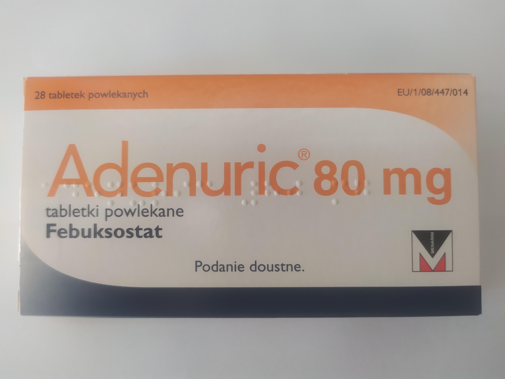
Ціна: Уточнювати у менеджера
Колхіцин-(Colchicine)
Діючою речовиною лікарського засобу Колхіцин Лірка є колхіцин - алкалоїд, екстрагований із насіння пізньоцвіту осіннього, трав’янистої рослини, що належить до родини лілійних.Екстракт цієї рослини має діуретичні, анальгетичні та протизапальні властивості, тому його застосовують при ревматизмі, артриті та, особливо, як протиподагричний засіб.Хоча механізм протиподагричної дії колхіцину повністю не з’ясований, вважають, що препарат зменшує запальну реакцію на відкладання кристалів мононатрію урату в тканинах завдяки здатності пригнічувати метаболізм, рухливість та хемотаксис поліморфноядерних клітин та/або інші функції лейкоцитів. Колхіцин також безпосередньо впливає на відкладання мононатрію урату шляхом зменшення утворення молочної кислоти поліморфноядерними лейкоцитами та опосередковано - шляхом пригнічення фагоцитозу.

Ціна: 500 грн/уп.
Іруксол-(Iruxol)
Іруксол (IRUXOL) - це унікальний засіб для лікування гострих хронічних і труднозаживающих ран, зовнішнього застосування. Основним компонентом препарату є коллагенеза, ферменти якого ефективно розщеплюють некротичні тканини, гнійні маси, струпи і в слідстві активізуються процеси загоєння, грануляція і епітелізація рани. Антибактеріальні властивості Iruxol забезпечують найбільш хороший мікроклімат в рані, для якнайшвидшого загоєння і захисту від нових інфекцій.

Ціна: 760 грн/уп.
Ультрапрокт свічки-(Ultraproct supposte)
Флуокортолон виявляє протизапальну, проти алергічну і протисвербіжну дію. Зменшується дилятація капілярів, міжклітинний набряк і тканинна інфільтрація. Пригнічується проліферація капілярів. Препарат Ультрапрокт ® містить два естери флуокортолону, початок головної дії яких припадає на різний час, що дозволяє швидко досягти ефекту і довго його підтримувати (двофазна дія). Цинхокаїн як локальний анестетик зменшує больові відчуття.

Ціна: 600 грн/уп.
Ультрапрокт мазь-(Ultraproct unguento)
Флуокортолон виявляє протизапальну, проти алергічну і протисвербіжну дію. Зменшується дилятація капілярів, міжклітинний набряк і тканинна інфільтрація. Пригнічується проліферація капілярів. Препарат Ультрапрокт ® містить два естери флуокортолону, початок головної дії яких припадає на різний час, що дозволяє швидко досягти ефекту і довго його підтримувати (двофазна дія). Цинхокаїн як локальний анестетик зменшує больові відчуття.

Ціна: 600 грн/уп.
Дайвонекс мазь-(Daivonex unguento)
Синтетичний аналог активнішого метаболіту природного вітаміну D3. Викликає дозозалежне гальмування проліферації кератиноцитів (значно підвищеної у хворих на псоріаз) і прискорює їх морфологічну диференціацію. Незначно впливає на метаболізм кальцію в організмі. Інгібітор активації Т-лімфоцитів, викликаної інтерлейкіном 1.

Ціна: 600 грн/уп.
Адвантан Крем 50г-(Advantan Crema 50g)
Адвантан при місцевому застосуванні пригнічує запальні, алергійні реакції шкіри, а також реакції, пов’язані згіперпроліферацією клітин, що приводить до послаблення як об’єктивних симптомів (почервоніння, набряк, інфільтрація, ліхеніфікації), так і суб’єктивних скарг (свербіж, печіння, біль). При місцевому застосуванні метил преднізолонуацепонату в ефективній дозі системний ефект є мінімальним. При нанесенні навеликі ділянки шкіри рівень кортизолу у плазмі залишається у межах нормального діапазону, не порушується його циркадний ритм. Також не встановлено зменшення екскреції кортизолу у добовій сечі.

Ціна: 600 грн/уп.
Адвантан Крем 20г-(Advantan Crema 20g)
Адвантан при місцевому застосуванні пригнічує запальні, алергійні реакції шкіри, а також реакції, пов’язані згіперпроліферацією клітин, що приводить до послаблення як об’єктивних симптомів (почервоніння, набряк, інфільтрація, ліхеніфікації), так і суб’єктивних скарг (свербіж, печіння, біль). При місцевому застосуванні метил преднізолонуацепонату в ефективній дозі системний ефект є мінімальним. При нанесенні навеликі ділянки шкіри рівень кортизолу у плазмі залишається у межах нормального діапазону, не порушується його циркадний ритм. Також не встановлено зменшення екскреції кортизолу у добовій сечі.

Ціна: 500 грн/уп.
Спіраль Нова Т380 - Nova Т380 (Bayer)
Показаний для внутрішньоматкової контрацепції жінкам дітородного віку. Рівень вагітності становить 1,26 на 100 жінок-років. Після видалення NOVA-T фертильність швидко відновлюється. Якщо пристрій витягується в середині циклу і у жінки був статевий акт протягом тижня, вона схильна до ризику вагітності, якщо новий пристрій не буде вставлено відразу після видалення. Мідні ВМС запобігають вагітності, запобігаючи заплідненню. Це засноване на придушенні транспорту сперматозоїдів та яйцеклітин та/або здатності сперматозоїдів запліднювати яйцеклітину.
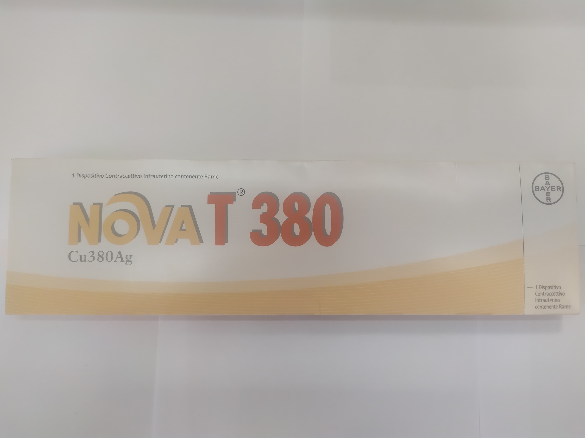
Ціна: Уточнювати у менеджера
Метергін-(Метілeргометрін) / Methergin(Metilergometrina)
Methergin використовується в акушерстві:
Для лікування неповної інволюції матки (розширена матка із-за слизу, крові та тканин, які неможливо усунути), лохіометрії та післяпологової кровотечі.
Methergin має метилергометрин як активну речовину, що використовується як потужний стимулятор матки.
Метилергометрин є природним напівсинтетичним похідним, алкалоїдом ріжків, ергометрином.
Ці ліки діють, викликаючи скорочення м'язів матки.
Передбачуваний час початку терапевтичної дії становить від 5 до 10 хвилин, коли препарат вводиться перорально, а фармакологічна дія триває від 4 до 6 годин.

Ціна: 300 грн/уп.
Сайтотек,Мізопростол-(Cytotec,Чітотек)
Гастропротекторний засіб, синтетичний аналог PgE1. Збільшує утворення захисного слизу та гідрокарбонату; сприяє посиленню кровотоку у слизовій оболонці. Прискорює загоєння ерозій, виразки шлунка та 12-палої кишки, у ряді випадків здатний запобігти їх утворенню. Препарат безпосередньо впливає на парієтальні клітини шлунка, пригнічує базальну, нічну, стимульовану (їжею, гістаміном, пентагастрином) секрецію HCl. Зменшує базальну (але не стимульовану гістаміном) продукцію пепсину.

Ціна: 850 грн/уп.
Неурабен капсули №30 - Neuraben capsule №30,вітаміни групи B
Неурабен капсули,Вітаміни групи B - це лікарський засіб який містить вітаміни групи B,які викликають заспокійливий ефект.Звичайно, в низці випадків,потрібний прийом вітамінів групи B. Ці пігулки можуть врятувати життя. Neuraben є Корисним для осіб похилого віку, жінок в період вагітності, вегетаріанців, а також людей, що мають захворювання, пов'язані з погіршенням засвоєння цих мікроелементів. Вживання Капсул Неурабену здатне не тільки поліпшити настрій і усунути симптоми депресії, але і поліпшити когнітивні функції мозку. Також застосування капсул Neuraben допомогає при лікуванні таких хвороб як: Псоріаз,Поліневрит,Алкоголізм,Нервові зриви,тощо...

Ціна: Уточнювати у менеджера
Зімафлуор,Зимафлуор-(Zymafluor)
Кожна людина задумується про здоров'я своїх зубів тільки тоді, коли вони починають боліти. І жалкують про те, що своєчасно не піклувалися про свої зуби. Діти не усвідомлють своїх проблем з зубами в ранньому віці.Тому саме батькам потрібно дбати про здоров'я зубів їхньої дити ще змалку. Аптека "FarmItal" пропонує дієвий,вітамінний засіб для дітей - Зімафлуор(Zymafluor,зимафлуор). Вчасне вживання вітамінів сприяє розвитку здорових зубів у дітей.А саме покращує міцність зубів, стійкість до температурних перепадів та попереджує такі хвороби як: карієс,гінгівіт,пульпіт,періодонтит,гранулема(кіста зуба).Медики акцентують: зуби "люблять" кальцій, магній, цинк, фосфор,марганець,мідь. Саме у вітамінах Zymafluor містяться всі ці корисні речовини.
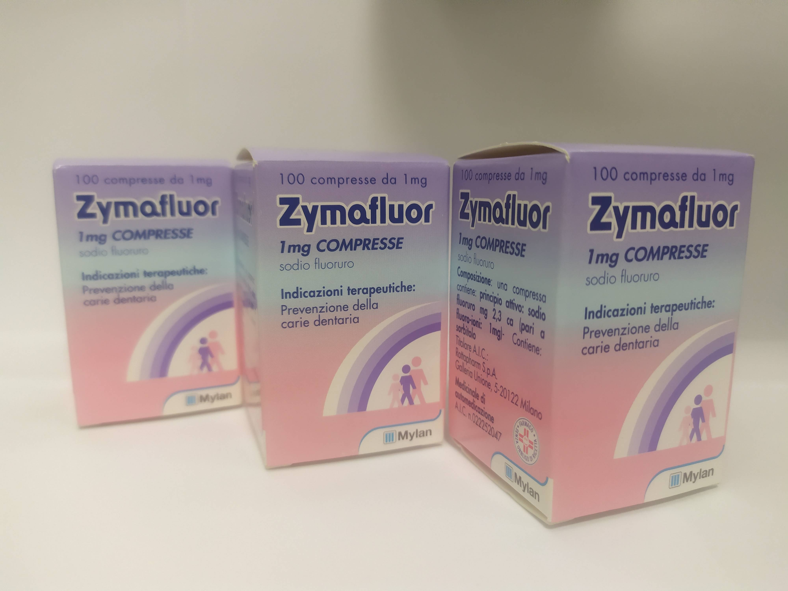
Ціна: 550 грн/уп.
Лозід - Lozid
LOZID - лікарський препарат, що застосовується в терапії серця та судин. Необхідність використання Лозид залежить від діагнозу. Проводити лікування препаратом Lozid слід згідно з інструкцією та рекомендаціями лікаря. Уважно вивчіть протипоказання перед застосуванням Лозиду. Не приймайте препарат, якщо у Вас є алергія на діючу речовину Лозід (Гідрохлортіазид + Лозартан) або будь-який допоміжний компонент даного лікарського засобу.
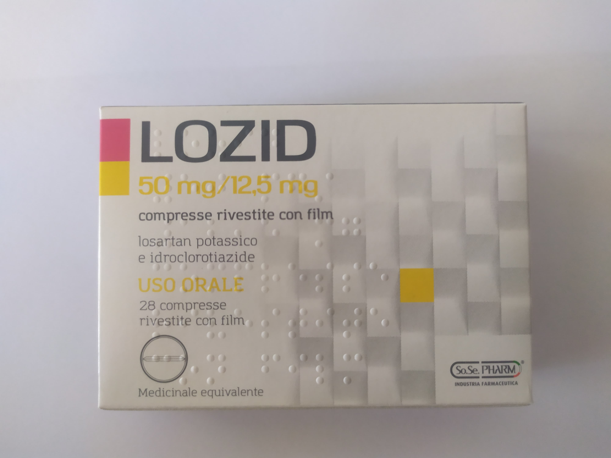
Ціна: Уточнювати у менеджера
Озодроп гель - Ozodrop gel
Ozodrop - це змащувальний, захисний, зволожуючий і заспокійливий офтальмологічний гель на основі гіпромелози та озонованої рослинної олії. Завдяки змащувальним, зволожуючим і захисним властивостям на поверхні ока він корисний: для сприяння репаративним процесам після хірургічного або травматичного стресу; при лікуванні симптомів, пов’язаних із запальними патологіями; при лікуванні сухості очей, навіть за наявності подразнення, викликаного умовами навколишнього середовища або механічним впливом, наприклад, застосування контактних лінз.
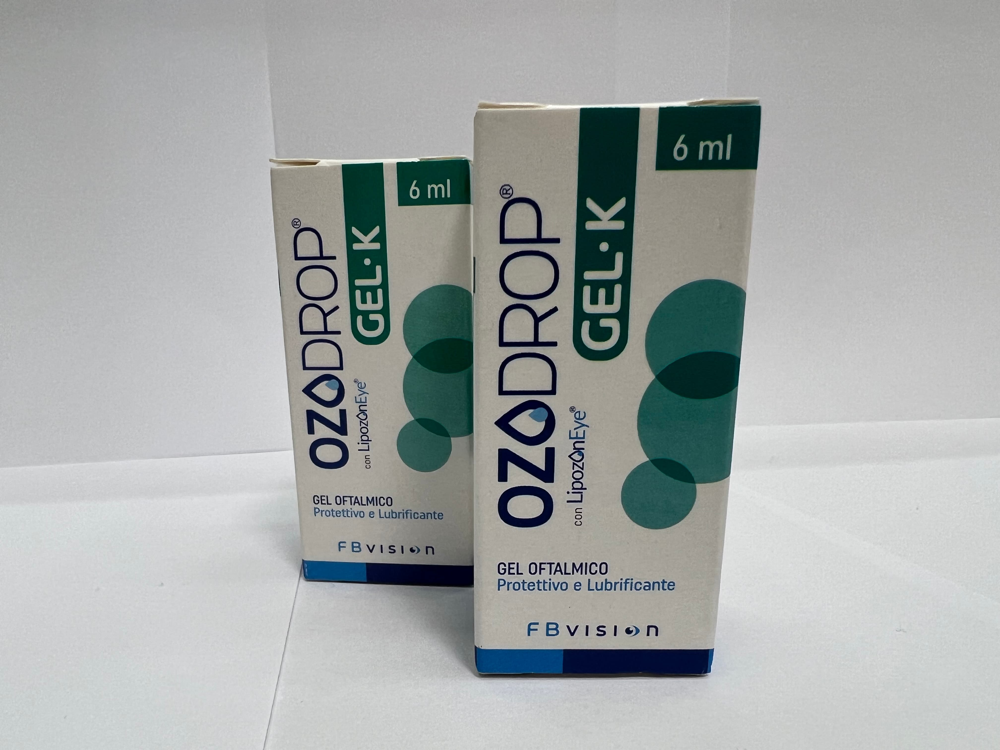
Ціна: 1150 грн/уп.